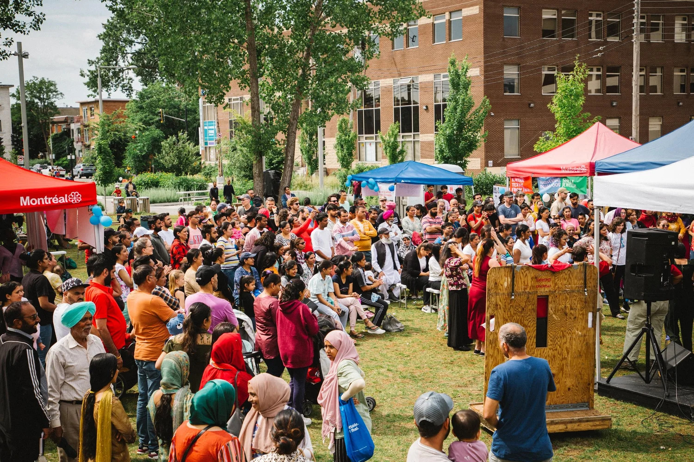

Brique par Brique holds open houses and festivals that build connection and solidarity in its diverse Montreal neighbourhood. Photo credit: Brique par Brique
Brique par Brique is a non-profit organization established in 2016 to respond to rapid gentrification and displacement in Parc-Extension, one of Montreal’s most diverse neighbourhoods. Brique par Brique operates under a dual mandate to (1) build affordable community housing and spaces, and (2) cultivate collective action and local leadership through community development and cultural programming.
To accomplish these goals, Brique par Brique needed to find capital. Traditional financing is expensive and often unavailable to smaller non-profit housing providers. Further, the private sector has different aims from community-led housing, where value is defined by the social and equity implications of providing housing as a human right rather than for profit. There is also often fierce competition among housing providers for limited public sector funding, which is not nearly plentiful enough to cover the need for affordable and social housing across Canada.
Community bonds are guaranteed fixed-rate bonds provided by a community issuer to a non-profit borrower, offering an innovative pathway for non-profit and community-led housing providers to finance projects in a way that keeps wealth within communities and strengthens community organizing. Funds raised from the bonds can then be used for site acquisition and development, to leverage additional funding, or to pay down higher-interest debts.
Brique par Brique launched its first community bond campaign in 2018, raising over $360,000 in nine months from 40 community investors. With these funds and some additional support from the Government of Québec through the now-abolished AccèsLogis program, Brique par Brique acquired land and is constructing a 31-unit social housing complex with the aim of renting out units by 2027 at 25% of household income or less. They also used some of the funds to open a cultural centre in 2021.
Running a community bond campaign builds relationships with like-minded community investors, but requires significant resources and time. To mount a successful campaign, organizations must first educate community members about what community bonds are and how they work, then maintain communication consistently throughout the lifespan of the project. Brique par Brique found that, although its investors were aligned with the organization’s solidarity values, many felt frustrated by how slow the site acquisition process was. The organization’s staff needed to host one-on-one meetings with the investors to offer transparency and rebuild trust.
Despite these challenges, Brique par Brique has launched a second community bond campaign in 2025 to raise $5 million for two new projects: a community centre, and a second solidarity housing project in Parc-Extension. The organization received a $100,000 grant from CMHC in 2019 to document its community bond model and other findings from the first acquisition. Community financing offered Brique par Brique a launchpad for its affordable housing project, as well as an opportunity to build relationships with community investors and create support for future social-purpose projects.